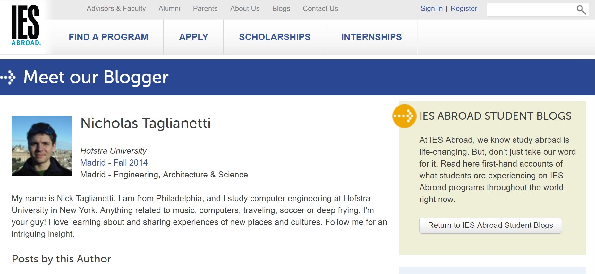

I am a senior Computer Science major at the University of Pittsburgh. I write clean, well-tested code in a variety of different programming languages.
I am minoring in Spanish at the University of Pittsburgh. Practicing language and learning about different cultures all around the world are my passions.
I have a wide variety of interests and hobbies. In addition to my professional skills, I am an avid traveler, musician, audiophile, and vinyl record collector...among other things!
I study Computer Science at the University of Pittsburgh and will graduate in December 2017. While at Pitt, I've programmed in various languages including Java, C, C++, and C# in a wide array of courses. I am currently learning how to code in Python, HTML, CSS, and JavaScript/JQuery. On the database side of things, I'm learning a little bit of MySQL and have lots of interest in Redis since I attended RedisConf 2016 in San Francisco last summer. I also have experience with various programming platforms and IDEs such as VIM, NetBeans, Microsoft Visual Studio, and Atom. Additionally, I have taken a Software Quality Assurance course at Pitt in which I learned Test Driven Development and various QA/testing techniques for different types of applications. I'm currently gaining experience in UI design while learning the Unity game engine through my CS Capstone project for the Pitt School of Pharmacy in the creation of a AR/VR training game for the practice of pharmacy sterile compounding.
Tengo cuatro años de experiencia y competencia de español. Participé en un intercambio a Alcobendas, ES (cerca de Madrid) en la escuela secundaria en 2013. Luego, estudié en Madrid durante el primer semestre de 2014 en mi segundo año de la universidad. Allí, yo viví con una familia española que no hablaba ni palabra de inglés, entonces tenía que aprender cómo comunicar con ellos para sobrevivir en España por cuatro meses. Al mismo tiempo, asistí a clases de informática y español en la bilingüe Universidad Carlos III de Madrid. Mi estancia en Madrid era fantástica, entonces decidí a declarar una asignatura secundaria de español en la universidad de Pittsburgh. Espero utilizar mi conocimiento de español en mi carrera porque me encanta el idioma y las culturas que lo hablan.
Visit My Official IES Madrid Blog! I love traveling and in the past four years have visited Germany, Belgium, France, Italy, Austria, Quebec, and of course Spain. My next trip is a return to Paris, France this upcoming June, and I cannot be more excited. I'm also a huge fan of music and have a vast vinyl record collection of albums spanning genres from Rock to Jazz to Folk to Motown. On that note, I am a massive Bruce Springsteen fan and have seen him live nine times! I also love to play the guitar (and pretend like I can play the piano), and I have an expanding collection of musical instruments. My prized possession is my Martin 00-15 acoustic guitar, "Loretta". I also have an American Fender Telecaster Custom electric guitar, a Juan Alvarez classical guitar that I purchased in Madrid, a vintage Kay Venetian mandolin, and my family's brand new Cunningham Baby Grand Piano. I consider myself an audiophile with a love for analog equipment and electronics. I like to tinker with my Fender Excelsior tube guitar amp and have assembled a tube phono preamplifier in my free time.
This webpage was created during the 2017 Spring semester during my senior year at the University of Pittsburgh.
Created for CS1530 - Programming for Web Applications.
This Kendo UI window was added in October 2017 as part of research into Kendo UI windows for Fiserv.
GitHub Repo: github.com